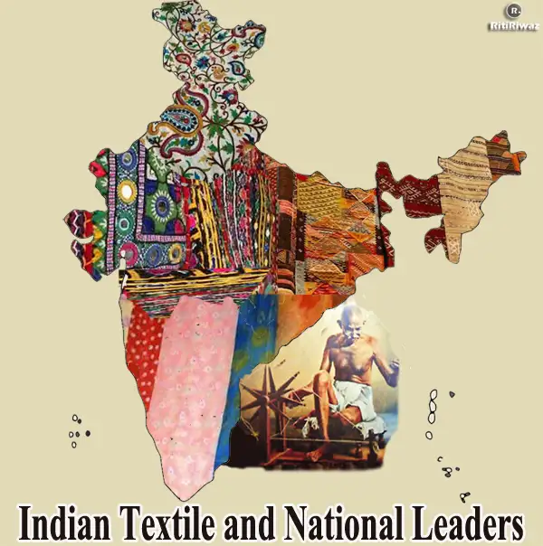

Introduction
The textile industry is one of the oldest and most important industries in India. The Indian textile industry is a key contributor to the country's economy, with a current contribution of around 1% of GDP. The sector employs over 45 million people directly and indirectly, making it one of the largest employment generators in the country.
The industry is currently facing some challenges, including competition from cheaper imports, high input costs, and declining exports. However, the government has taken some steps to support the industry, such as providing financial assistance and creating an export promotion scheme.
The textile industry is an important part of India's economy and culture. It has a long history and employs millions of people across the country. Despite some challenges, the industry continues to play a vital role in India's development.
